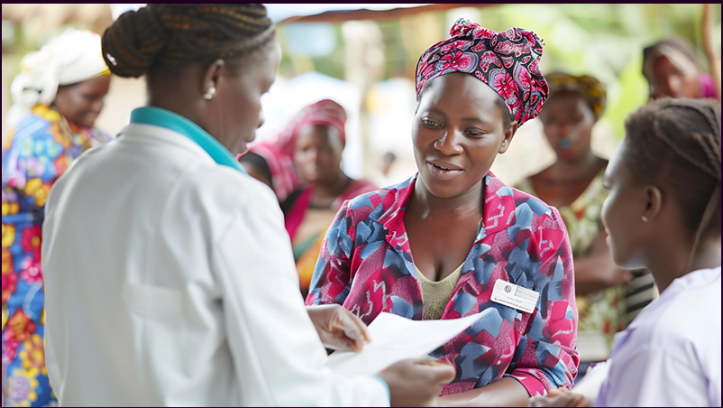

I am Teresah Wanjiku, a cancer survivor, mental health advocate, and passionate leader. My journey through breast cancer opened my eyes to the often-overlooked mental and emotional toll of the illness.
As I worked to rebuild my life, I realized the critical need for accessible emotional support for cancer patients and survivors. With this insight, I founded the Sprout and Live Hope Foundation.
My mission is simple: to remind every patient that healing is not just physical—it’s also emotional and psychological.
“My battle with cancer transformed my life, igniting a passion to support those facing similar journeys. Overcoming this challenge showed me that cancer is not a death sentence; it’s an invitation to heal, grow, and live with purpose.”
I lead the Sprout and Live Hope Foundation to address the psychological impact of cancer. I design emotional wellness programs, build partnerships with health organizations, and coordinate events that promote emotional well-being for patients and survivors.
I raise awareness about the critical link between cancer and mental health. I’ve shared my story at Equity Bank (K.U. Branch), Heritage Insurance, and K.U.N.S.A., encouraging hope and support for cancer warriors through public speaking engagements.
Through local initiatives in Nairobi County, I have helped create support groups for cancer survivors and their families. These safe spaces allow people to share, heal, and grow emotionally together as a community.
Through local initiatives in Nairobi County, I have helped create support groups for cancer survivors and their families. These safe spaces allow people to share, heal, and grow emotionally together as a community.
“Teresah’s story gave me the courage to keep fighting. Her support through the foundation has been life-changing.”
– Lucy Njoki, Cancer Survivor
“Teresah brings an extraordinary energy to the cancer support community. She truly understands and empathizes with the challenges we face.”
– Angela Wairimu, Foundation Volunteer